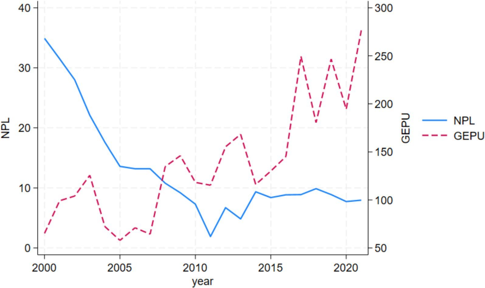

Bangladesh · 2000–2021 · published evidence
When global uncertainty crosses borders, credit risk moves.
A visual evidence atlas of how lagged global economic policy uncertainty is associated with short-run changes in non-performing loans in Bangladesh’s banking system.
Based exclusively on Angela (2026), Future Business Journal, 12:99.
PRIMARY SIGNAL
EVIDENCE LIVE
A one-standard-deviation rise in lagged GEPU
→
baseline annual change in the NPL ratio
Published interpretation of the baseline estimate: 0.0196 × 61.682 index points.
01 / THE OBSERVED SIGNAL
Two series. Different scales. A lagged question.
The paper does not infer its central result from a visual correlation. It models the annual change in NPLs against lagged GEPU, conditional on domestic macro-financial variables.
Published Figure 2

Original published figure, reused under CC BY 4.0. The interactive lens changes emphasis only; it does not alter the plotted data.
02 / THE TRANSMISSION ENGINE
External shock. Domestic balance sheets. Delayed recognition.
Explore the published conceptual architecture and the mechanisms used to interpret the estimates. Select a node to trace its role.
External demand
Uncertainty can weaken export orders, margins and cash flow, particularly through ready-made garments.
Finance & FX
Risk premia, trade finance, currency pressure and unhedged balance sheets can tighten debt service capacity.
Prices & income
Commodity-price and inflation channels can compress firms’ margins and households’ disposable income.
Remittance hosts
Uncertainty in destination economies can alter the income buffer available to Bangladesh households.
03 / THE CORE ESTIMATE
The coefficient survives every baseline specification.
Select a model to inspect the published GEPU coefficient, HAC standard error and controls. The interval display reproduces the information behind the paper’s coefficient plot.
Table 5 · Figure 3
Intervals reconstructed from the reported Table 5 Newey–West HAC standard errors to reproduce the published coefficient plot.
THEORY MEETS THE ESTIMATE
The domestic controls do more than “control.” They expose the transmission environment.
VariablePriorFull modelReading
Remittances−+ *Contrary to the household-buffer prior
GDP growth−+ **Consistent with procyclical lending interpretation
Public debt−− ***Short-run fiscal-buffer interpretation
Bank stability−− **Capital and profitability cushion
ReservesConditionaln.s.No direct short-run effect detected
04 / THE EVIDENCE LAB
Robustness is a pattern—not a single star.
Move across the paper’s diagnostic layers. The interface preserves non-significant results and small-sample cautions rather than flattening them into a headline.
DESCRIPTIVE LENS
−0.469**
Contemporaneous level correlation
NPL and GEPU levels move inversely over the full sample, heavily reflecting the early decline in the NPL stock.
DYNAMIC REGRESSION LENS
+0.0196***
Lagged effect on the annual NPL change
GEPUt−1 predicts ΔNPLt after conditioning on remittances and economic growth.
05 / THE SUPERVISORY CLOCK
The practical value is the lead time.
The paper’s policy argument is forward-looking: stock NPL ratios arrive after the shock has already passed through borrowers’ cash flow and banks’ credit processes.
Detect the external shock
Integrate GEPU and other external-risk indicators into macro-financial surveillance rather than waiting for realised arrears.
Early-warning signalInterrogate credit quality
Use the approximate one-year window for stress testing, targeted loan review, and forward-looking asset-quality monitoring.
Supervisory lead timeBuild countercyclical capacity
Tighten underwriting and consider dynamic provisioning or countercyclical buffers during expansions, when procyclical risk may accumulate.
Resilience architectureMONITOR
External uncertainty + domestic resilience
- Global economic policy uncertainty
- Flow-based change in NPLs
- Fiscal capacity and bank stability
ACT
Before the NPL stock confirms the shock
- Forward-looking stress scenarios
- Pre-emptive capital and liquidity buffers
- Underwriting discipline in expansions
INTERPRET CAUTIOUSLY
Small sample, reduced-form evidence
- 21 effective annual observations
- No structural causal identification
- Single-country generalisability constraint
SOURCE / ATTRIBUTION
One paper. No synthetic evidence.
Every numerical result, chart, table and analytical statement in this atlas is drawn from the published article. Interactive states reorganise the evidence; they do not create new observations or substitute a new empirical analysis.